SLランド/栃木県那須町
 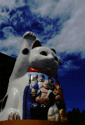 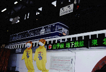
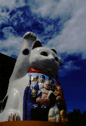 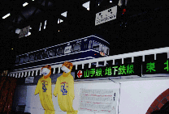
那須のSLランド。ここはレストランと遊技施設を兼ねたヤクザな観光施設である。
ここの特徴としてはとにかく徹底して鉄道ものを使っていることである。料理を各席までミニチュアの電車が運んで来るレストランや鉄道模型ジオラマ展示などなど。鉄ちゃん約束の地である。そのSLランドの一画に4両の列車が並んでいる。あいにく私は鉄ちゃんではないのでよくわからないのだがかなり古そうな客車である。その外壁に「開運列車」「金運招来」などと書かれているとついふらふらと入っていってしまう私なのであった。それにしても先頭車両に書いてあった「恋のロゴス」って一体何だったんだろう。
で、ひととおり園内の鉄道模型や訳の解らないお化け屋敷のようなモノを回ってから「開運」エリアに向かう。
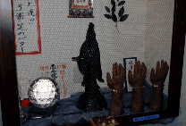 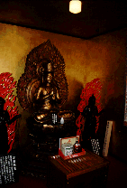 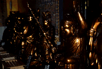
列車の前には石のおちゃらけた地蔵などが並びインチキ臭い事この上ない。
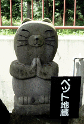 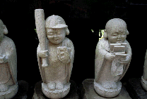 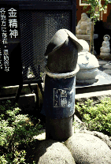 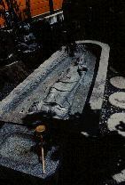
ま、御覧の通り列車内に七福神やら観音様やらを並べたものなのだが、どうも各列車の入口にある謳い文句が凄い。「この車両には運気がシャワーのごとく降りそそいでいます」とか買いてあって、その割りには内容はとてもチープ。いや、結構金かかってるとは思うのだがガランとしたとこに並べてあるのでどうも倉庫のようで味気ない。ほんとにこんなトコに運気が降りそそいでるのかあ。って考えるまでもないか。
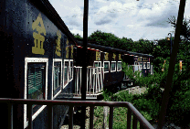 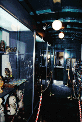
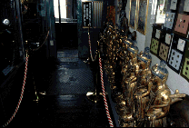 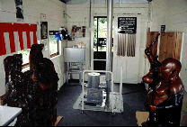 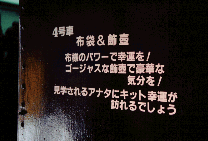
1998.7
珍寺大道場 HOME